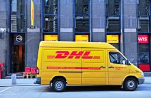

Ecommerce News
https://ecommercenews.eu/
Ecommerce News is a daily blog featuring news about the ecommerce industry in Europe. We write about cross-border, payments, omnichannel and much more!
フィード
EU Commission approves takeover Ceconomy by JD.com
Ecommerce News
This week, the European Commission has approved the takeover of Ceconomy, the owner of MediaMarkt and Saturn. Chinese ecommerce giant JD.com is acquiring the company. The Commission has added conditions to the deal. For example, JD.com needs to provide warehousing and logistics services to third-party retailers. In 2023, JD.com and…
1日前
Zalando sees new revenue potential in external shops
Ecommerce News
Zalando is expanding its product range with items from other online stores, starting with Westwing. An AI shopping agent will eventually place orders on participating external websites, without customers having to leave the Zalando app. The German company aims to generate revenue from Zalando Extended in two ways. Zalando is…
2日前

DHL introduces fee for second delivery attempt
Ecommerce News
German postal and logistics service DHL has announced several price changes. One of the changes is the introduction of a fee for second delivery attempts of parcels. Previously, second delivery attempts were part of the standard procedure. Now, senders will be charged 2.99 euros. Logistics and postal company DHL has…
4日前
Brussels approves Temu’s action plan
Ecommerce News
The European Commission has approved an action plan submitted by Temu to combat the spread of illegal products. The Chinese platform has committed to implementing five corrective measures. The fine previously imposed on Temu remains in place. In May, Temu was fined 200 million euros by the European Commission for…
5日前
Winners Becom Awards 2026 announced
Ecommerce News
The Becom Awards were presented yesterday in Brussels. This year, the Diamond Awards went to Kentucky Horsewear and Woosh. There were 29 finalists in 10 categories. Becom is a Belgian trade association for online retailers. The Becom Awards are presented every year. Last year, Flo Féa, Rootsum, and Baunat were…
8日前

Breuninger expands into 11 new markets
Ecommerce News
Breuninger is accelerating its expansion in Europe. After earlier launches in the first half of the year, it is now expanding into eleven more markets. As a result, the company will now be active in 24 markets in total. The German family-owned Breuninger launched an online store in addition to…
9日前
Amazon introduces returnless refunds in Europe
Ecommerce News
Amazon is bringing its ‘no-return’ solution for sellers using Fulfilment by Amazon (FBA) to Europe. When customers request a refund, they get their money back without having to return the item. FBA Returnless Resolutions, which has been available on Amazon.com for some time, was launched this week by Amazon in…
9日前
Lengow acquires Daily&Co
Ecommerce News
French ecommerce automation platform Lengow has acquired Daily&Co, a provider of multi-channel marketplace integration and distribution software solutions. The companies have not released any financial details about the deal. As a result of the acquisition, Lengow can offer catalogue management services. Lengow is a French platform that was founded in…
9日前
Zooplus marketplace launches in Spain
Ecommerce News
German online pet supply store Zooplus has expanded its marketplace to Spain. The Spanish platform went live with 10,000 new products. It is the third market where Zooplus has expanded its marketplace model to. In 2024, Zooplus already announced that it had plans to launch a pan-European marketplace, in order…
12日前
Record number of counterfeit products intercepted in EU
Ecommerce News
Customs authorities and other enforcement agencies in the EU intercepted a record 196 million suspected counterfeit items last year, with a total estimated value of 6.3 billion euros. That is 67 percent more than in 2024. This is according to a report by the European Commission and the European Union…
12日前